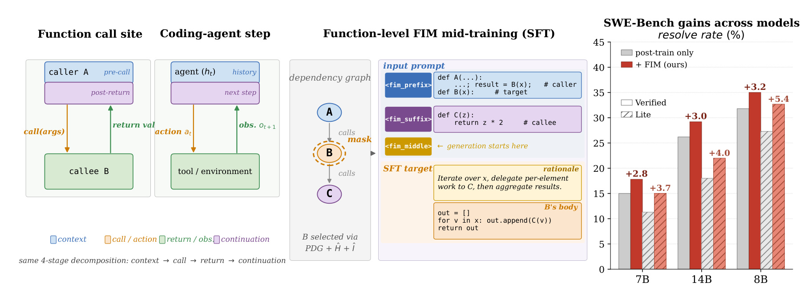
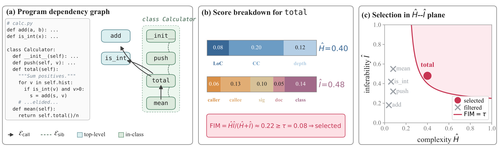
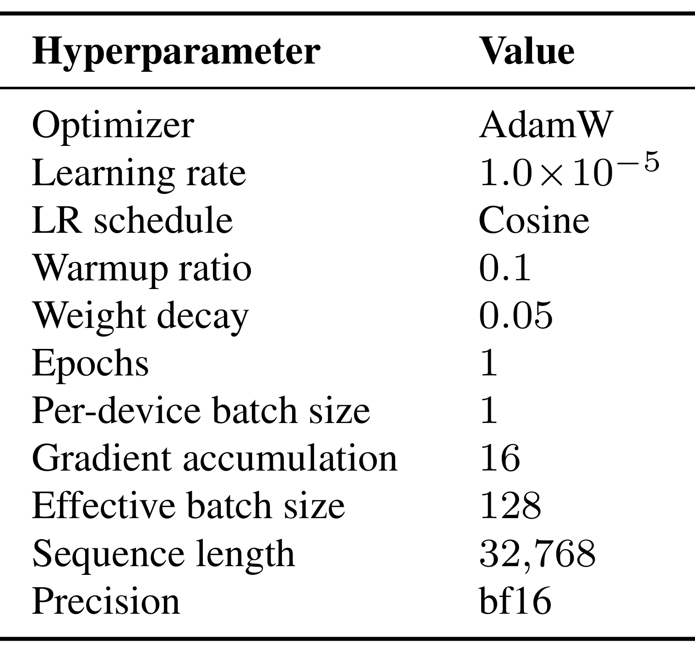
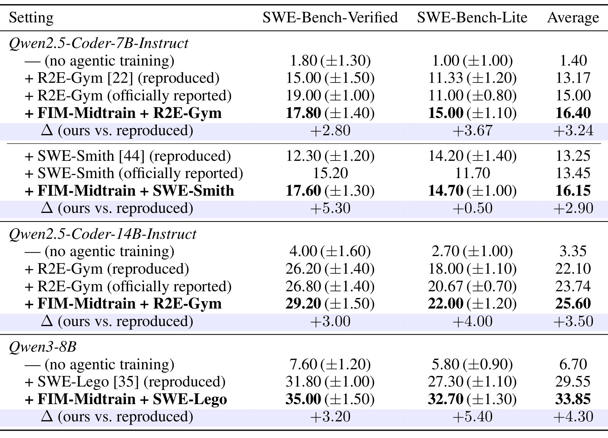
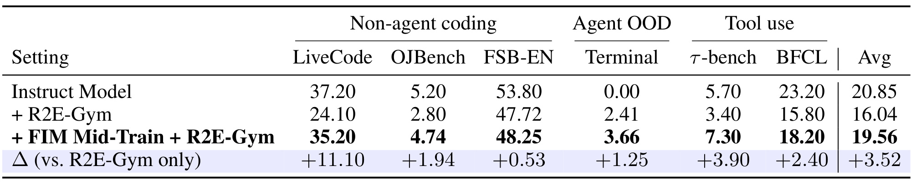
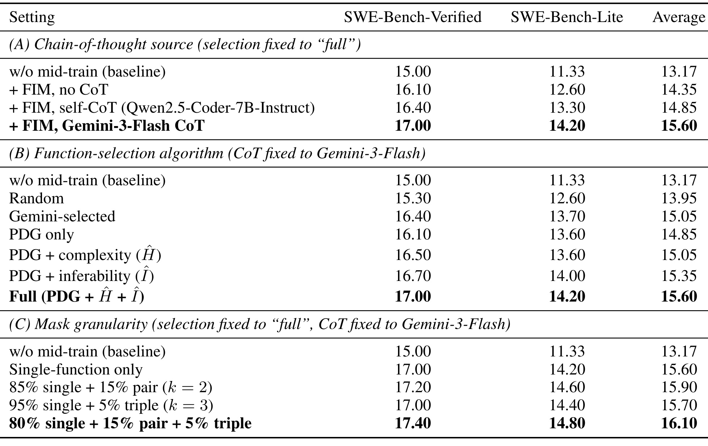
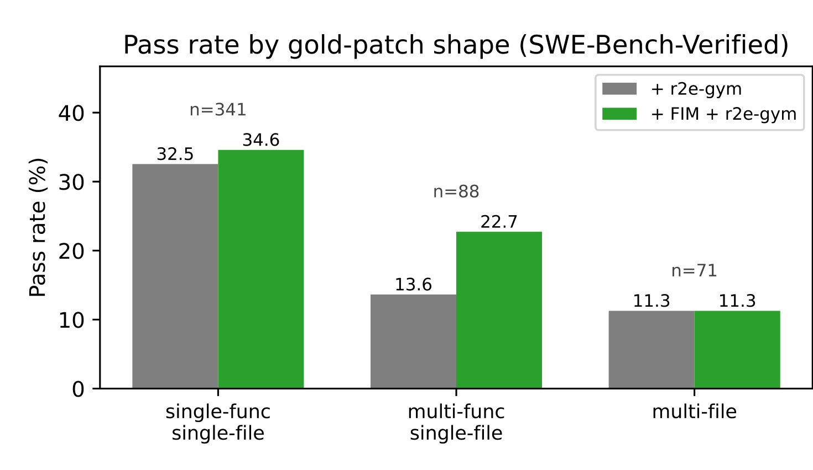
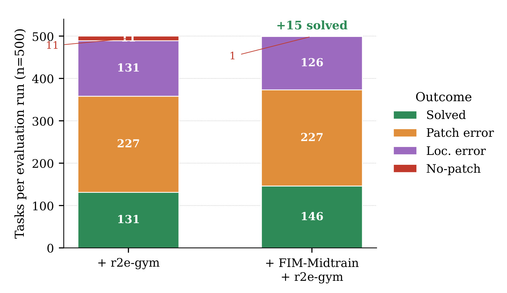

Function-Aware Fill-in-the-Middle as Mid-Training for Coding Agent Foundation Models：用函数感知 FIM 中训为 Coding Agent 安装结构先验
这篇论文由 Yubo Wang、Jiarong Liang、Yuxuan Zhang、Xuye Liu、Cong Wei、Yuyu Zhang、Ping Nie 与 Wenhu Chen 合作完成，一作主机构为滑铁卢大学，合作机构包括英属哥伦比亚大学、NVIDIA、Verdent AI 与 Vector Institute。论文于 2026 年 7 月 14 日公开，入口为 arXiv:2607.12463。作者把普通代码中的函数调用点视为 coding Agent 单步交互的互联网规模“结构替身”，据此在 Agent 后训练之前插入一个 function-aware fill-in-the-middle（FIM）中训阶段。PDF 首页给出了 GitHub 项目地址，但截至 2026 年 7 月 16 日本轮访问返回 HTTP 404；论文 checklist 也写明代码、语料与 checkpoint 计划在 camera-ready 阶段发布，因此本文将其标为尚未核验公开，不把可复现性承诺等同于已可下载的工件。
代码 Agent 必须把外部工具返回重新并入后续推理，但标准从左到右代码预训练主要暴露正向生成，随机片段 FIM 又常切断表达式、缺少推理监督，并把结构信号稀释在超大规模预训练中；因此，基础模型在进入 Agent 后训练前并没有被专门训练成理解“动作—外部返回—继续执行”的条件结构。
1. 背景和问题
当前开放 coding Agent 的典型训练链条是“代码基础模型 + Agent 轨迹后训练”。基础模型依靠 next-token prediction 学会语法、库调用和局部程序模式，R2E-Gym、SWE-Smith、SWE-Lego 一类流水线再用真实或合成的软件工程轨迹，把模型调成能浏览仓库、调用工具、修改文件和运行测试的 Agent。这个范式已经能显著提高 SWE-Bench，但两段训练之间存在一个容易被忽略的结构断层：基础模型主要学习给定左侧上下文后继续写代码，而 Agent 在每一步都要消费一个并非由自己生成的 observation，再依据它修改后续计划。大量扩充 Agent 轨迹当然可以补课，却把最昂贵、最任务化的数据留给了本可由普通代码自监督学习的能力。
论文的关键观察不是“函数调用和工具调用都长得像 API”，而是二者有相同的四阶段条件结构。函数调用前的代码建立意图并绑定参数，call 把控制权交给另一个作用域，callee 在别处计算 return value，调用者再用返回值继续执行。Agent 则维护历史，发出 action，环境或工具产生 observation，模型随后依据整个 trace 继续。两者都要求模型把“当前局部上下文看不见的计算结果”接回原来的控制流。普通代码以互联网规模提供这种结构，但从左到右预训练只顺着 caller 写到 callee 或顺着 return 写到 continuation，很少要求模型反向利用调用者和下游使用方式去重建中间函数。
现有随机跨度 FIM 似乎已经能利用左右上下文，为什么还需要新阶段？论文给出三点区分。第一，随机边界经常落在表达式或半条语句内部，学到的是局部补全，不一定需要理解 caller、callee 与共享状态。第二，普通 FIM 直接预测缺口，没有与 Agent “先判断工具返回意味着什么，再采取下一步动作”相似的 reasoning-before-action 监督。第三，即便现代 code LLM 在万亿 token 预训练里混入 FIM，它也只是众多目标之一；距离 Agent 后训练很远时，函数级结构先验可能被其他模式摊薄。作者因此把函数级 FIM 单独放在后训练之前，称为 mid-training，目的不是增加一套部署时模块，而是在参数中预先安装一种更适合消费外部返回、追踪函数依赖的归纳偏置。
这里需要守住论文自己的证据边界。“函数调用—Agent 步骤同构”是启发方法的结构类比，不是形式化等价或因果定理：FIM 训练时后缀已给定，Agent 在线推理时未来动作尚不存在；函数返回通常遵循确定程序，工具 observation 还可能带有非确定性、权限错误和自然语言噪声。论文真正检验的是：这种训练能否在相同 Agent 后训练流水线下提高最终 SWE-Bench，通过非编码工具调用任务转移，以及收益是否集中到多函数依赖和负 observation 恢复。这个问题设置比只报总通过率更强，因为它把“指标提高”与“提高发生在理论预期位置”分开验证。
从研究设计看，最关键的对照不是“有无更多代码 token”，而是训练预算被放到了什么结构上：随机 FIM、函数级但无推理的 FIM、不同目标选择器、不同单函数/多函数配比，以及相同后训练配方下是否都能保留增益。若改进仅来自额外计算，收益应当较均匀；若函数依赖先验确实有效，则多函数单文件修改、遇到负反馈后的恢复和工具使用应出现更明显变化。论文后续的主表、消融表和行为分析正是围绕这组可证伪预期组织，因而读者应同时检查绝对通过率、对照是否同配方、收益落点和计算代价，而不能只看最高分。
2. 方法
2.1 从函数调用到 Agent 步骤的结构同构
作者先把 Agent 单步过程写成动作采样和环境返回两个条件过程：
符号解释：$h_t$ 是第 $t$ 步之前的历史，$a_t$ 是模型依据策略 $\pi$ 选择的动作，$o_{t+1}$ 是工具或环境按过程 $p$ 产生的 observation。关键在于 $o_{t+1}$ 不是模型的普通续写，而是外部过程返回、随后必须重新进入模型条件上下文的变量。函数调用中的 pre-call context、call、return 与 post-return continuation 分别对应 $h_t$、$a_t$、$o_{t+1}$ 和下一步推理。

Figure 1 左侧把 caller 与 callee 画成控制权往返：橙色箭头是 call/action，绿色箭头是 return/observation，蓝色上下文和紫色 continuation 则说明问题不止是生成一个函数体，而是让返回值影响后续。中间面板展示训练替代物：从程序依赖图选中函数 B，把 B 的 body 置于 <fim_middle>，同时保留调用它的 A、被它调用的 C、函数签名及下游代码作为 prefix/suffix；监督目标先生成 rationale，再生成 B 的候选实现。右侧柱图是总效果预览，但它不等同于严格消融，真正可比的数值仍要看 Table 1。整图最重要的信息是：作者没有在训练时模拟完整 shell 或编辑器，而是把普通函数调用压成一个可规模化的 Agent-like 条件学习问题；部署时也不需要额外 dependency graph，先验已经写入模型参数。
2.2 依赖图与复杂度—可推断性双标准
语料从约 2,000 个 GitHub 候选仓库出发，经人工质量过滤得到 968 个 Python 仓库。作者删除与 SWE-Bench 源仓重合的仓库和已知 fork，并把每个仓库截断到早于 SWE-Bench 最早 base commit 的提交，以降低测试泄漏。最终约有 78K 个自包含 Python 文件、400K 个 FIM 样本和 2.6B Qwen2.5-Coder tokenizer token，其中约 320K 为单函数、60K 为二函数、20K 为三函数目标。这里的“去污染”针对仓库与时间重合，并不能证明没有语义近邻或公共依赖泄漏；但至少比只做字符串去重更贴近 SWE-Bench 的仓库来源。
每个文件先解析 AST，函数和类方法成为节点。$E_{\mathrm{call}}$ 记录 caller 到 callee 的调用边，$E_{\mathrm{sib}}$ 连接同一类中的 sibling 方法，用来捕获不直接调用但通过 self.x 共享状态的耦合。调用解析支持模块内直接调用、类实例化映射到 __init__、self/cls 方法调用，并在精确解析失败时做短名回退；后者提高覆盖，却可能把同名函数误连。候选还要经过文件 50–1800 行、函数 10–200 行、排除 dunder 方法等硬过滤。

Figure 2 用 Calculator.total 把四阶段选择器压缩成可检查的例子。左图的实线 call 边显示 total 调用 add 和 is_int，虚线 sibling 边表示同类方法共享类上下文；中图把复杂度拆成 LoC、圈复杂度和嵌套深度，把可推断性拆成 caller、callee、签名、docstring 与 class 五个信号；右图则显示候选必须落到复杂且仍可由上下文恢复的区域。total 的 $\hat H=0.40$、$\hat I=0.48$，联合分数约 0.22，高于 0.08 阈值。这个图也揭示方法的取舍：只追求复杂会选到无法从周围恢复的噪声，只追求可推断又会选到 add 一类太简单的样本，双标准希望把训练预算放在“需要推理但仍有证据”的缺口上。
符号解释：$v$ 是候选函数，$\mathrm{LoC}$、$\mathrm{CC}$、$D$ 分别是代码行数、McCabe 圈复杂度与控制流最大嵌套深度；$w_\ell,w_c,w_d=(0.4,0.4,0.2)$，软上限 $(c_\ell,c_c,c_d)=(50,10,5)$。$\phi$ 允许真正复杂的函数超过 1，但把极端离群值截到 2，避免单一长度或分支数控制排序。
符号解释：五个 $C$ 分别衡量调用点参数是否具体、目标调用多少个文件内 helper、函数名/类型注解/参数是否提供签名线索、是否存在 docstring，以及同类 sibling 和独立 __init__ 提供多少类上下文；权重为 $(0.30,0.25,0.20,0.10,0.15)$。作者有意使用手工 proxy 而非参考模型的 perplexity，以免目标选择器绑定某个 base model，但代价是这些 proxy 未必等价于真实 mutual information。
符号解释：$\epsilon$ 是数值稳定项，乘积除以和会惩罚 $\hat H$ 或 $\hat I$ 任一侧过低；$\rho$ 再按剩余困难度 $\Delta$ 下调无法学习的目标。它没有乘 2，因此数值尺度不是传统 harmonic mean，阈值也必须按作者设定解释。
符号解释：$\Delta$ 表示复杂度中没有被上下文线索覆盖的比例。当 $\hat I\ge\hat H$ 时它为 0；复杂度远高于可推断性时趋近 1。这个定义只惩罚“太难”，不会额外奖励极易恢复的目标，因为易样本已由 LoC、$\hat H$ 等硬门槛过滤。
符号解释：单函数默认 $\tau_d=0.50$、$\sigma=0.20$。低于阈值不受惩罚，超过后按单侧高斯衰减；候选还需满足 $\hat H\ge0.15$ 与 $\mathrm{FIM}\ge0.08$。因此选择流程同时包含不可微的硬过滤和可排序的软分数，属于语料工程启发式，而非由下游损失端到端学出的选择策略。
2.3 多函数联合掩码与耦合约束
真实软件补丁往往跨越同一文件中的多个函数。作者从 $E_{\mathrm{call}}\cup E_{\mathrm{sib}}$ 枚举八类连通拓扑：二函数的 caller-callee、co-callee、sibling-coupled、mutual-call，以及三函数的 call-chain、hub、fan-in、class-triad。多函数目标不能直接平均单函数分数，因为组内函数互相引用的线索会在联合掩码后消失；所以 $\hat I(G)$ 要重新计算，排除组内 caller/callee/sibling 贡献，把组内 docstring 置零，只有签名和组外上下文继续可见。
符号解释：$G$ 是由 $k=2$ 或 $3$ 个函数构成的组，$\hat H(G)$ 是成员复杂度平均，$\hat I(G)$ 是联合掩码后重算的组可推断性，$\rho_G$ 使用略宽松的 $\tau_d^G=0.55$，$\mathrm{Coup}(G)$ 则要求成员确实存在跨函数关系。组分数把耦合度放成乘性门控，是因为若成员互不相关，联合掩码只等于把多个单函数样本机械拼在一起。
符号解释：$E_G^{\mathrm{call}}$ 与 $E_G^{\mathrm{sib}}$ 是组内调用边和 sibling 边，$J_G^{\mathrm{acc}}$ 是成员访问 self.x 属性集合的平均 Jaccard 相似度，$(w_c,w_s,w_{st})=(0.50,0.20,0.30)$。pair 与 triple 的分数阈值分别是 0.04 和 0.03，还要满足耦合度至少 0.15、组代码占文件比例不超过 0.30/0.40，并按分数贪心去重。附录 toy pair 因联合掩码后 $\hat I(G)$ 降到约 0.18、总分约 0.029，反而未过 pair 门槛，说明算法不是“有调用边就收”。
2.4 CoT 生成—过滤—序列化与两阶段训练
每个通过选择的目标经历 Generate、Filter、Format。生成阶段中 Gemini-3-Flash 只看到函数体被替换为 mask 的文件，依据 imports、签名、caller、callee 和 sibling 上下文先写逐步 rationale，再写候选 body；它看不到真实函数体。过滤阶段由另一个 Gemini-3-Flash judge 读取真值与候选，从 feasibility、correctness、executability、API usage、readability、completeness 等维度评分，删除依赖外部约定、不可执行或总体质量过低的样本。真实函数体在这里仅作为筛选锚点，不会进入最终训练 target，所以这更接近“用真值检查教师预测后蒸馏教师路径”，而不是直接监督恢复原函数。
符号解释：$P$、$S$ 是目标函数前后的代码，$R$ 是教师生成的 rationale，$B$ 是教师候选实现；模型只在 middle 的 $R,B$ 上计算标准 FIM loss。把 rationale 放在 body 前面，使训练顺序贴近 Agent 的 think-then-act，但也引入了 Gemini-3-Flash 的表达偏好和闭源依赖。消融中 no-CoT 和 self-CoT 都会提升，说明函数级 FIM 不完全依赖教师；默认最优配置仍包含闭源教师，因此“自监督”准确地描述 mask 任务来源，却不能覆盖整个 rationale 构造链。
中训在 Qwen2.5-Coder-Instruct 7B/14B 与 Qwen3-8B 上各跑一轮，再原样接入 R2E-Gym、SWE-Smith 或 SWE-Lego 后训练。部署与评测使用最终 checkpoint，不保留 FIM 格式或 PDG 选择器。作者没有把 FIM-only checkpoint 与 instruction-tuned base 直接比较，因为只做 FIM 会损害 instruction following；这使所有报告增益都经过后续 Agent 后训练存活，但也意味着论文没有单独测出中训立即产生多少 Agent 能力，观察到的是完整训练顺序的净效应。
3. 实验结果
3.1 数据、训练链路与评测口径
主任务是 SWE-Bench-Verified 500 题与 SWE-Bench-Lite 300 题；非 Agent 编码保持使用 LiveCodeBench、OJBench、FullStackBench-EN，OOD Agent/工具调用使用 Terminal-Bench 2.0、$\tau$-bench 与 BFCL。R2E-Gym 使用 OpenHands fork，SWE-Smith 使用 SWE-agent，Qwen3/SWE-Lego 使用 OpenHands。所有最终数值取三个独立评测 seed 的均值并给出标准差；baseline 是 base + post-training，ours 是相同 base + FIM mid-training + 相同 post-training。这个控制对 R2E-Gym 和 SWE-Smith 内部成立，Qwen3 对比则同时改变 base family 和 post-training pipeline，不能当作纯模型家族消融。

Table 7 固定了中训阶段的复现口径：三种 base 都用 AdamW、$10^{-5}$ 学习率、cosine schedule、0.1 warmup、0.05 weight decay，仅训练 1 epoch；每卡 batch 为 1、梯度累积 16，在 8 卡上形成 effective batch 128，序列长 32,768，精度为 bf16。该表很窄，但它比“使用标准 FIM loss”更能约束复现。训练规模并不轻：论文披露完整实验约用单节点 8 张 H100 80GB 连续 30 天，即约 5,760 GPU-hours，初步与废弃运行另加约 30%。因此这是一条可以利用普通开源代码构造数据、却仍需要高额训练和多 seed Agent 评测预算的路线；在项目页尚未公开时，超参数充分披露并不等于结果已能独立复核。
3.2 主结果：模型规模与后训练流水线

Table 1 的正确读法是把 ours 与同一作者复现的 post-training baseline 比，而不是直接和灰色“officially reported”行比。Qwen2.5-Coder-7B + R2E-Gym 从 Verified 15.00 提到 17.80、Lite 11.33 提到 15.00，增量为 +2.80/+3.67；14B 从 26.20/18.00 提到 29.20/22.00，增量 +3.00/+4.00。换成 SWE-Smith，同一 7B base 的 Verified 从 12.30 到 17.60，+5.30 很显著，但 Lite 只从 14.20 到 14.70，+0.50，说明中训收益会与后训练分布和测试集相互作用。Qwen3-8B + SWE-Lego 从 31.80/27.30 到 35.00/32.70，+3.20/+5.40；它支持“不只对 Qwen2.5 + R2E-Gym 有效”，却没有隔离 Qwen3 与 SWE-Lego 各自贡献。
三个 seed 的标准差大多约 0.9–1.5，方向在表中一致，但论文没有报告显著性检验或更多训练随机种子。还应注意，7B R2E-Gym 复现 Verified 15.00 低于官方 19.00，而 FIM 版本 17.80 仍未超过官方行；论文的内部控制依然有效，但它反映的是作者复现环境中的相对增益，不能把所有绝对差距归于 mid-training。更有价值的结论是：同一份 2.6B-token 中训数据在 7B、14B、8B 三个规模上均未被后训练洗掉，并在两类 SWE-Bench split 上保持正向。
3.3 能力保持与跨域工具调用

Table 2 暴露了只看 SWE-Bench 会忽略的成本。14B Instruct base 在 LiveCodeBench 为 37.20，R2E-Gym 后降到 24.10；BFCL 从 23.20 降到 15.80，FullStackBench-EN 从 53.80 降到 47.72，$\tau$-bench 从 5.70 降到 3.40。加 FIM 中训后，LiveCodeBench 回到 35.20，相对 post-only 恢复 +11.10；OJBench +1.94、FSB-EN +0.53、Terminal +1.25、$\tau$-bench +3.90、BFCL +2.40，六项平均从 16.04 到 19.56。由于中训语料只有 Python 代码且没有工具轨迹，$\tau$-bench/BFCL 的正向变化是支持结构迁移的重要证据。
不过“唯一机制就是同构先验”仍是作者解释，不是被消融完全排除的因果结论。FIM 中训也可能起到抗遗忘、延长代码训练或正则化后训练的作用；论文没有加入等 token 的普通 causal continued-pretraining、随机函数级 FIM 或其他抗遗忘基线来完全拆解这些可能性。FSB-EN 只恢复 +0.53，远未回到 Instruct 53.80，BFCL 也仍比 Instruct 低 5 分，说明它是减轻 erosion，而不是无代价地保留所有基础能力。
3.4 消融：CoT、目标选择与掩码粒度

Table 3 在 7B + R2E-Gym、统一 200K target 预算下拆三块。A 块显示 baseline Average 13.17，no-CoT FIM 到 14.35，证明结构化 FIM 本身贡献 +1.18；self-CoT 到 14.85，Gemini-3-Flash CoT 到 15.60。教师带来额外收益，但 no-CoT 已得到约一半于 Gemini 配置的总提升，因此方法不是纯粹把闭源教师能力蒸馏进模型。B 块中 random 13.95、Gemini-selected 15.05、PDG only 14.85，逐步加入 $\hat H$ 和 $\hat I$ 后达到 15.60；inferability 单独比 complexity 单独更有效，完整双标准最好，支持“难且可恢复”需要同时控制。
C 块显示单函数 15.60，加入 15% pair 后 15.90，只加 5% triple 为 15.70，80%/15%/5% 混合达到 16.10。pair 的边际收益较稳定，triple 近乎饱和，符合联合掩码越大、外部可推断线索越少的机制。需要谨慎的是，这张表使用 200K target，而 Table 1 主配方使用完整语料，绝对数不能跨表直接比较；消融只有 7B，没有验证最佳配比是否随模型规模、语言或仓库结构变化。
3.5 行为分析：收益集中在哪里
作者在 14B + R2E-Gym 的 Verified 轨迹上按金标补丁形状分桶，用来检验函数级训练是否真的帮助函数间依赖，而不仅是普遍提高生成质量。

Figure 5 中 341 个单函数单文件任务从 32.5% 到 34.6%，只增 +2.1 个百分点；88 个多函数单文件任务从 13.6% 到 22.7%，增 +9.1 个百分点，超过前者四倍；71 个多文件任务两边都是 11.3%。这正好与训练粒度一致：pair/triple 目标在一个文件内沿 caller-callee、sibling 或共享状态构造，因而能练跨函数控制/数据依赖，却没有显式建立跨文件检索和协调。该分桶为方法动机提供了位置一致性证据，也同时指出边界：要扩展到多文件修复，需要把 PDG 和联合掩码提升到 repository-level，而不能假设函数级先验自然外推。
轨迹行为还显示 Agent 更愿意“迭代—验证”。遇到负 observation 的轨迹占比近似，baseline 为 88.8%，ours 为 91.8%；但最终恢复为 passing patch 的比例从 24.8% 到 28.8%。已解任务平均编辑数从 3.3 增到 7.4，步骤数从 15.1 增到 23.6；search 动作占比下降，execute_bash 上升。成功率提高伴随更长上下文和更多工具调用，而且约 45% 轨迹触及 step cap，baseline 约 7%，所以方法可能把“过早停止”改成“愿意继续尝试”，但在线成本和尾部循环风险也同步升高。

Figure 6 把未解任务按确定性规则分成 no-patch、localization error 和 patch error。FIM 版本每轮平均多解 15 题，no-patch 从约 11 降到约 1，定位错误从 131 小降到 126，而 patch error 保持约 227 不变；换言之，主要收益不是让已经定位并修改代码的补丁更正确，而是显著减少模型直接 <finish>、没有产生任何 diff 的失败。论文举出的 scikit-learn-26323 案例中，baseline 一步结束且目标文件错误，FIM Agent 则运行约 41 步、执行约 20 次替换并从多次负返回中恢复。这个行为与 FIM 始终要求在 prefix 与 suffix 之间产生非空 middle 的训练倾向相符，同时警告我们：停止策略改善并不等于补丁质量机制已经解决。
Lite split 的方向部分一致：恢复率从 18.8% 到 22.1%，no-patch 从约 8 降为 0，已解任务编辑数从 4.4 到 7.8。不过 Lite 没有多文件任务，且只有 54 个多函数单文件任务；其 +4.0 pp 总增益主要来自单函数桶，而多函数桶没有变化。因此“收益集中在多函数推理”目前主要由 Verified 支撑，不能写成跨测试集的普遍规律。
4. 总结
4.1 我的判断
这篇论文最有价值的地方，是把 Agent 数据问题前移到基础模型目标设计：不再只问“如何合成更多软件工程轨迹”，而是问“普通代码里是否已经存在与工具返回消费相同的条件结构”。Function-aware FIM 的完整链条清楚：用 PDG 找函数依赖，用复杂度和可推断性筛选训练价值，用多函数组覆盖跨函数补丁，再把 rationale 与候选 body 放进 middle，最后让相同 Agent 后训练检验先验是否存活。主结果、跨域能力保持、no-CoT/selection 消融、补丁形状分桶和 no-patch 失败分析相互咬合，证据比单纯 SWE-Bench 排名更完整。
但最稳妥的结论是“函数感知 FIM 是一个有希望的中训配方”，不是“函数调用与 Agent 工具调用已经被证明等价”。项目工件尚未公开，三种模型都属于 Qwen 系列，Python 占据语料和主任务，多 seed 只是评测 seed，且缺少等 token 普通 continued-pretraining 控制。行为结果还表明成功来自更少空补丁和更长迭代，而 patch error 没有下降；如果服务系统有严格延迟、token 或工具调用预算，这个收益需要重新按成本约束评估。
4.2 对推荐系统与大模型工程的启发
对大模型训练，最直接的启发是把“中训数据选择”视为结构匹配问题，而不是只按领域标签采样。工具 Agent、RAG 或数据分析 Agent 都可能在普通程序、SQL DAG、workflow definition 中找到 action-return-continuation 的自监督替身。对推荐系统，函数级配方不能直接证明 CTR、召回或排序收益，但可迁移的设计思想很具体：以召回器—特征服务—排序器—重排器之间的调用图为结构，选择既有跨模块依赖、又能由上下游约束恢复的中间节点；训练模型在给定调用前状态和下游消费方式时重建被遮蔽模块的语义或配置。若用于线上推荐 Agent，还应把 timeout、空候选、特征缺失、策略拒绝等负 observation 显式纳入评测，并同时报告成功率、恢复率、工具调用数、延迟与 step-cap 触发率。
复现时建议先做小规模闭环：固定 Qwen2.5-Coder-7B、等量 200K target，至少比较随机 span FIM、随机函数 FIM、PDG-only、完整 $\hat H+\hat I$ 和等 token causal continued-pretraining；然后分别用 no-CoT、self-CoT 与开源教师，避免把闭源 rationale 质量与结构目标混在一起。评测除 SWE-Bench 外应保留 LiveCodeBench、BFCL/$\tau$-bench，并增加单位成功任务的 token、步骤、编辑次数和 wall time。只有当主增益在控制计算预算后仍成立，才能判断 mid-training 是更高效的先验安装，而不只是让 Agent 花更多步骤换成功率。
4.3 局限与后续跟进
主要局限至少有六点：
- 语言与模块化偏置：语料和主任务以 Python 为主，方法依赖清晰函数边界；monolithic script、notebook、生成代码以及 Java/C++/Rust 尚未系统验证。
- 闭源教师依赖：默认 rationale 生成和过滤都用 Gemini-3-Flash；self-CoT 虽恢复多数收益，仍未给出完全开源、同质量的替代链路。
- 跨 base 证据不纯：Qwen3-8B 同时换成 SWE-Lego，无法隔离 base family 的贡献；全部 base 又都来自 Qwen 系列。
- 因果对照不足：缺少等 token 普通中训、随机函数级 FIM 和独立抗遗忘方法的完整对照，能力保持不能唯一归因于“同构”。
- 成本与停止策略：更多编辑和步骤带来成功，也显著提高 step-cap 命中；论文未报告每个成功补丁的推理成本、延迟或美元成本。
- 公开状态与治理：PDF 的 GitHub 地址当前 404，论文 checklist 明确代码和新工件尚未随投稿发布；许可证统计超过 80% 为 MIT/Apache/BSD，但仍需逐仓库核对其余授权、派生语料分发条件和模型训练条款。
下一步最值得跟进三类实验。第一，等待项目页真实公开后核对 968 仓库清单、去污染脚本、目标选择实现、Gemini prompt 与 checkpoint，并复算 Figure 2 的选样分布。第二，把多函数组扩到跨文件调用图，单独测 Figure 5 中当前无增益的 multi-file bucket，同时控制检索上下文长度，判断瓶颈来自训练粒度还是 Agent scaffold。第三，在 Java、C++、Rust 及推荐/搜索流水线 DSL 上重建结构信号，并加入等 token causal/FIM 基线、更多训练随机种子与成本归一化评测。若这些结果仍保持“多模块任务收益更大、非目标能力侵蚀更小”，function-aware mid-training 才更接近可复用的 Agent 基础模型训练原则，而不只是一次有效的 Python coding Agent 配方。